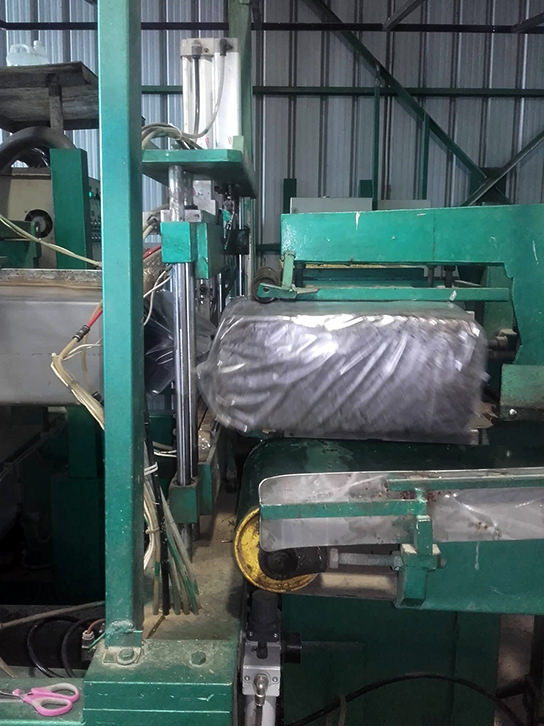
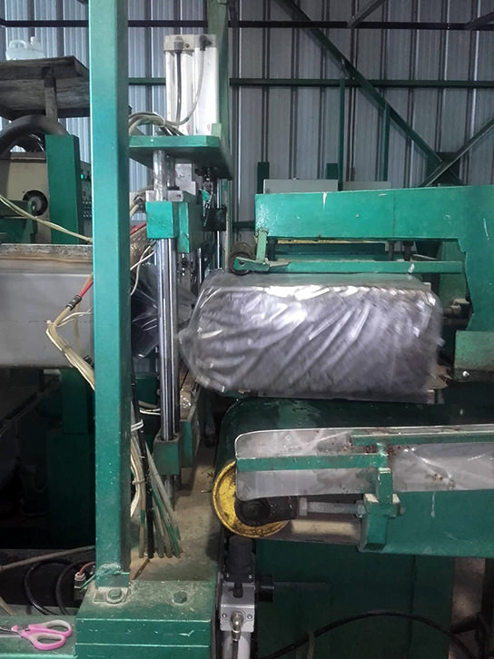

Η ΙΣΤΟΡΙΑ ΤΗΣ ΜΟΝΑΔΑΣ
Η ιστορία της μονάδας ξεκινάει στις αρχές του 2000. Ένα πρωτοποριακό έργο για την πόλη του Κιλκίς, η επιχείρηση ήταν όχι μόνο η πρώτη κάθετη μονάδα παραγωγής πλευρώτους μανιταριών στον νομό Κιλκίς, αλλά και η μοναδική μονάδα με δυνατότητα παραγωγής του δικού της μπλοκ (υπόστρωμα).
Απο την μέρα της ίδρυσης της πέρασαν διάφοροι επενδυτές χωρίς όμως να την αξιοποιήσουν στο μέγιστο, με αποτέλεσμα να κλείσει το 2010.
Το 2014 βρέθηκαν δύο άνθρωποι δραστήριοι και δημιουργικοί (Γιώργος και Παναγιώτης), οι οποίοι είδαν την κλειστή μονάδα ως μία πρόκληση και έβαλαν το δικό τους στοίχημα βάζοντας την ξανά σε λειτουργεία (με ιδία κεφάλαια) με στόχο να την καταστήσουν βιώσιμη σε μία περίοδο βαριάς οικονομικής ύφεσης.
Οι προσπάθειες τους απόδωσαν καρπούς με αποτέλεσμα σήμερα η μονάδα να έχει ξεπεράσει τον όγκο παραγωγής που είχε όταν πρωτοάνοιξε, καθιστώντας την έτσι μία εξαιρετικά υγιής επιχείρηση, για την οποία έχουν ήδη προγραμματιστεί περαιτέρω επενδύσεις με σκοπό την επέκταση της μονάδας με νέους θαλάμους και καινούργιους εξοπλισμούς.
Σήμερα η μονάδα δραστηριοποιείται στην πώληση συσκευασμένου προϊόντος στην τελική του μορφή στην αγορά αλλά και στην διάθεση μπλοκ (υπόστρωμα μανιταριών) σε μονάδες-δορυφόρους για δική τους καλλιέργεια.
ΚΟΠΗ & ΖΥΜΩΣΗ ΚΟΜΠΟΣΤ
Για την παραγωγή του κόμποστ χρησιμοποιούμε άχυρο απο σκληρό σίτο το οποίο αφού περάσει απο την διαδικασία κοπής, ύγρανσης και ζύμωσης, εισέρχεται στο τούνελ παστερίωσης. Η διαδικασία της παστερίωσης πραγματοποιείται με ατμό και υπό τις κατάλληλες συνθήκες. Ύστερα απο 48 με 54 ώρες, το κόμποστ είναι έτοιμο για το στάδιο της σποράς.
 

ΕΠΩΑΣΗ
Αφού ολοκληρωθεί η σπορά, τα μπλοκ εισέρχονται σε θάλαμους με αυστηρά επιλεγμένη θερμοκρασία και υγρασία ώστε να ξεκινήσει το στάδιο της επώασης, το οποίο θα διαρκέσει απο 17 εώς 22 ημέρες, ανάλογα με την ποικιλία του σπόρου που θα επιλέξουμε.
ΚΑΛΛΙΕΡΓΕΙΑ
Ακολουθεί το στάδιο της συγκομιδής, το οποίο αποτελείται απο 3 φλας (60% - 30% - 10%). Το στάδιο γίνεται πάντοτε υπό τις κατάλληλες συνθήκες θερμοκρασίας, υγρασίας και αερισμού, οι οποίες ελέγχονται και προσαρμόζονται ηλεκτρονικά μέσω της κεντρικής μονάδας.
ΣΥΣΚΕΥΑΣΙΑ
Η συγκομιδή ολοκληρώνεται με το στάδιο της συσκευασίας και αποθήκευσης της σε θάλαμο συντήρησης απο 2 εώς 4 βαθμούς κελσίου.
ΤΑ ΜΑΝΙΤΑΡΙΑ ΜΑΣ
ΕΠΙΚΟΙΝΩΝΙΑ
Καλλιεργούνται και συσκευάζονται απο τον Μητσάκη Γεώργιο στο Κιλκίς, Τ.Κ. 61100
ΚΙΝΗΤΟ ΤΗΛΕΦΩΝΟ: 6945 79 33 97
Email: georgemitsakis@yahoo.com